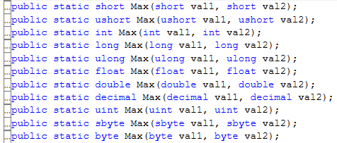

C# ジェネリック
C#やJavaなどにはジェネリックという仕組みがあります。これは、型を後から注入することによって、いろいろな型を操作できるコードを書く仕組みです。
例えば、C#標準ライブラリのListクラスなどは、int型やstring型や自作のクラスまで、どんな型でも格納できますが、これはジェネリックによって実現されています。
C++のテンプレートとほぼ同じ機能だと思って良いでしょう（※細かい部分での違いはありますが）。
次のようなクラスIntBoxがあったとします：
// int型の値を格納できるクラス
class IntBox
{
public int value;
}
int型の変数を格納できるクラスです。
（※説明のために極めて簡潔なクラスにしてあり、実用性は皆無なので、そこにツッコミを入れないように）
同様に、float型の変数を格納できるクラスが必要になり、次のようなクラスを作りました：
// float型の値を格納できるクラス
class FloatBox
{
public float value;
}
さらに他の型に対応したクラスも必要になったらどうしますか？
まあ、対応すべき型の数が限られていたりする場合は、上記と同様に、量産すれば良いですが、以下のような場合はそうもいきません：
特に、最後のケースなどは、対応しようがありません。まだ存在しない型のためのクラスをあらかじめ作れるわけがありません。
そのため、昔のC#やJavaでは、未知の型に対応するためには、object型を使っていました。
// どんな型でも格納できるクラス
class AnyBox
{
public object value;
}
object型は、全ての型の基底の型です。全ての型はobject型にキャストしたり、元の型に戻したりすることができます。そのため、次のようなコードを書くことができます：
static void Main(string[] args)
{
// 何でも入る箱を作る
AnyBox box = new AnyBox();
// 箱に 整数100 を代入
box.value = 100;
// 箱から取り出す。このとき、valueはobject型なので、キャストが必要。
int a = (int)box.value;
// 箱に 文字列"Hello" を代入
box.value = "Hello";
// 箱から取り出す。このとき、valueはobject型なので、キャストが必要。
string s = (string)box.value;
}
…とまあ、このようにobject型を使えば、どのような型も扱うクラスが作れるのですが、次のような欠点があります：
両方イヤですが、特に2つ目の欠点が辛いです。次のようなコードを書くと、コンパイルは成功するのに、実行したときにエラーになってしまうのです：
class Program
{
static void Main(string[] args)
{
// 何でも入る箱を作る
AnyBox box = new AnyBox();
// 箱に 整数100 を代入
box.value = 100;
// 中身は int型 なのに、string型 にキャスト → 実行時エラー
string s = (string)box.value;
}
}
プログラムのミスはコンパイル時に検出されるのが静的型付け言語の利点であるのに、その利点が失われてしまっています。
この不便さを解決するのがジェネリックという機能です。
ジェネリックを使うと、上記のクラスは次のようになります：// どんな型でも格納できるクラス
class AnyBox<T>
{
public T value;
}
黄色く強調した部分がジェネリックの特徴です。クラス名の右に<型パラメーター名>とします。型パラメーター名は任意の文字列を指定可能ですがTとするのが一般的です（おそらく"Type"の略）。このようにして定義したジェネリッククラスの内部では、型パラメーター名を型のように扱うことができます。上記のコードであれば、あたかもTという型が存在するかのようなコードを書くことができます。
このクラスを使うときは、次のようにします：
static void Main(string[] args)
{
// int型 を格納するための箱を作る
AnyBox<int> intBox = new AnyBox<int>();
// 箱に 整数100 を代入
intBox.value = 100;
// 箱から取り出す。このとき、キャストは不要
int a = intBox.value;
// これはコンパイルエラーとなる
string s = (string)intBox.value;
}
黄色く強調した部分がポイントです。ジェネリッククラスを使うときは、型パラメーターの部分に実際に存在する型を指定します。すると、指定した型で型パラメーターの部分が置き換えられます（上記の例でいうと、AnyBoxクラス内のTの部分がintに置き換わるイメージ）。
ジェネリックの無かった時代
強力なジェネリック機能ですが、C#やJavaに始めから存在していたわけではなく、どちらの言語においても、途中から追加されたものです。
初期のC#やJavaにはジェネリックが無かったため、コンテナークラスが扱えるのはobject型のみであり、値を取り出すたびにキャストが必要でした…（黒歴史）。
C#では、そのときの名残りとして、object型として内容を格納するArrayListクラスがあったり、ジェネリック版のIComparableと非ジェネリック版のIComparableがあったりします。それらは過去のソースコードとの互換性のためだけに残されているものであり、今から新たに利用することはないでしょう。
型パラメーターは2つ以上定義することもできます。
例：
class LargeBox<T1, T2>
{
public T1 value1;
public T2 value2;
}
型パラメーターが2つ以上ある場合は、型パラメーター名が1文字だとさすがにわかりづらいので、2文字以上でわかりやすい名前を付けることが多いです。
よく使われるクラスの中で、複数の型パラメーターを持つものの例としては、Dictionaryクラスが挙げられます：
public class Dictionary<TKey, TValue>...
利用時のコードは次のようになります：
Dictionary<string, int> d = new Dictionary<string, int>();
ジェネリックなメソッドを作ることもできます。メソッド定義時には型を仮のもの（型パラメーター）にしておき、利用時に実際の型が注入されます。
class Program
{
// ジェネリックメソッドの定義
static void Hoge<T>(T a)
{
Console.WriteLine("渡された型は" + typeof(T));
}
static void Main(string[] args)
{
// ジェネリックメソッドの呼び出し
Hoge<int>(100);
// 引数の型から、型パラメーターが自明のときは、型パラメーターを省略可能。
// 省略できるときは省略するのが普通です。
Hoge(100);
}
}
ちなみに、UnityのGetComponentなどは、ジェネリックメソッドです。
// 引数が無いので、型パラメーターで型を渡す必要がある
Rigidbody rb = GetComponent<Rigidbody>();
// ちなみに、上記の書き方は途中からできるようになったものであり、昔のUnityではこう書いていた
Rigidbody rb = GetComponent(typeof(Rigidbody));
前章のジェネリックメソッドを利用して、色んな型に対応したMax()関数を作ってみましょう！
Max()関数というのは、引数で数値を2つ受け取り、大きい方を返却するという定番の関数です。
例えば、int型にのみ対応したMax()関数は次のようになります：
static int Max(int a, int b)
{
return a > b ? a : b;
}
これのfloat版、double版、long版…などとたくさん作るのはイヤなので、ジェネリックを使って一度の定義で済ませたいと思い、次のようなコードを書きました：
static T Max<T>(T a, T b)
{
return a > b ? a : b;
}
ところが、これはコンパイルエラーとなってしまいます。
Tという型はどんな型にでもなる可能性があるため、比較演算子>が使えないのです。比較できない型が入ってくる可能性があるためです。
（ちなみにC++のテンプレートではこのようなことも可能なのですが…。C++のテンプレートの場合は、比較できない型でこの関数を利用しようとしたときにコンパイルエラーとなります）
では、どうしたらよいのでしょうか。
ここで、ジェネリック型制約の出番です。
ジェネリック型制約を使うと、型パラメーターが、ある特徴を持つことを強制できます。もう少し具体的にいうと、あるクラスを継承した型であること、またはあるインターフェースを実装した型であることを強制できます。
例えば、次のように書くことで、Tは必ずIComparableインターフェースを実装している（つまり比較可能である）ことが保証されます。
class Program
{
static T Max<T>(T a, T b) where T : IComparable
{
return a.CompareTo(b) > 0 ? a : b;
}
static void Main(string[] args)
{
// IComparableを実装した型ならMax()が使える
Console.WriteLine(Max(1, 2)); // int
Console.WriteLine(Max(1.0f, 0.1f)); // float
Console.WriteLine(Max(1L, 1234567890123456L)); // long
Console.WriteLine(Max("ABC", "DEF")); // string
// 例えばProgramクラスは比較できないので、以下はコンパイルエラーになる
Program p1 = new Program();
Program p2 = new Program();
Console.WriteLine(Max(p1, p2));
}
}
残念な点としては、相変わらず比較演算子>は使えないので、CompareTo()を使わなければならないという点ですね…。
このような感じでいまいちパッとしないジェネリックメソッドの型制約機能です…。賢い人からは「わざわざジェネリック使わんでも次のようにインターフェース使えばええんちゃう？」という意見が出てきそうです：
static IComparable Max(IComparable a, IComparable b)
{
return a.CompareTo(b) > 0 ? a : b;
}
はい、このように、そもそも引数の型をインターフェースにしても、同様に動作します。しかし、ジェネリック版のほうが以下の点で優れています：
というわけで、ジェネリックメソッドおよび型制約にも存在価値はあるのです（自分で定義するようなことは滅多に無いけど…）。
ちなみに、実は、C#標準のMathクラスにはMax()関数が既に定義されているのですが、その定義がどうなっているのかというと…

型の数だけ定義！ めっちゃ脳筋実装です💪🧠
なぜこうなっているのかというと、CompareTo()を使うより比較演算子で比較したほうがわずかですが速いからです。数学的計算は速さが重視されるため、このようになっています。また、未知の型に対応するMax()関数の必要性が低いであろうと考えられるためです。
型制約は、ジェネリックメソッドだけでなく、ジェネリッククラスに対しても使えます。次のように記述します：
class AnyBox<T> where T : IComparable
{
public T value;
}
上記までの例では、制約として「インターフェースを実装していること」を指定していますが、それ以外の制約の指定もあります。例えば「クラスである」とか「値型である」とか。
例えば、次のように記述することで、型パラメーターにクラスしか指定できなくなります（値型（intやfloatや構造体など）を指定できなくなる）：
class AnyBox<T> where T : class
{
public T value;
}
詳細はMicrosoft公式を参照してください。
ジェネリックは、たくさんの型や未知の型に対して、同じ操作を行いたいという要求を満たすものなので、新たにジェネリッククラスやジェネリックメソッドを定義する必要が出てくるのは次のような状況のときがほとんどです：
逆に言えば、上記のようなことをしないのであれば、ジェネリッククラスやジェネリックメソッドを定義する機会はほとんどないでしょう。しかし、フレームワークやライブラリによってあらかじめ定義されたジェネリッククラスやジェネリックメソッドを利用する機会は頻繁にあるため、ジェネリックの原理と使い方を理解しておくことは大切です。